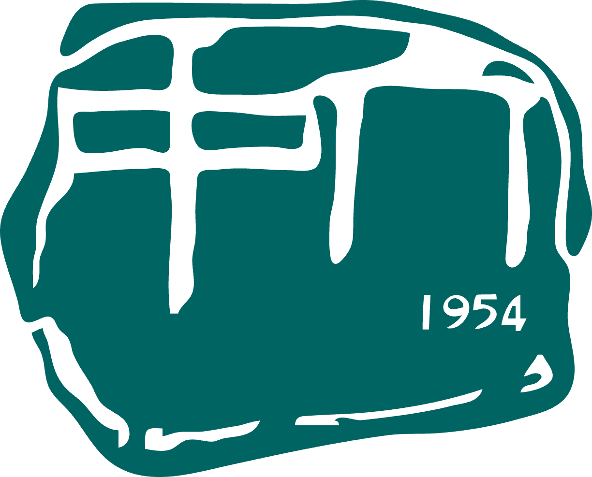

考试看板
考试倒计时时钟
--:--:--
----/--/--
当前状态
暂无考试安排
0
天
00
时
00
分
00
秒
请添加考试
考试进度
0%
--:--:--
----/--/--
距离考试开始
--
0
天
00
时
00
分
00
秒
请添加考试日程
考试进度
0%
--
--
--
--:--:--
点击右上角小组件以切换焦点
时钟
--:--:--
----/--/--
倒计时
--
--:--:--
--
考试计划管理
添加考试
语文
数学
英语
物理
化学
生物
政治
历史
地理
自定义…
快捷设定结束时间
45min后结束
60min后结束
75min后结束
90min后结束
120min后结束
150min后结束
添加考试
考试列表
设置
深浅色模式
选择应用的显示主题。
跟随系统
浅色
深色
主题配色
选择一个颜色，自动生成整套浅色与深色配色。
自定义颜色
#006463
指针式时钟
在首页数字时钟上方显示指针式时钟。
大时间界面小部件
勾选要在放大界面中显示的内容，下方为实时预览。
当前科目
考试时间段
下一科目
当前时间
效果预览
自定义科目
持久化保存该自定义科目，下次仍然可选
取消
确定